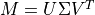
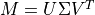

Matrix¶
-
Matrix inherits ObjectClone:
Matrix newObj = Matrix(other);
Matrix provides a real-valued matrix class.
Static Method¶
- static Matrix Construct(int aRow, int aColumns)¶
Construct a Matrix with aRow rows and aColumns columns, with all entries in the matrix set to zero.
Methods¶
- int Rows()¶
Return the number of rows of this matrix.
- int Columns()¶
Return the number of columns of this matrix.
- double Get(int aRow, int aColumn)¶
Return the value in row aRow and column aColumn. Indices are zero-referenced; the provided aRow must be non-negative and less than the value returned by Matrix.Rows, and the provided aColumn must be non-negative and less than the value returned by Matrix.Columns.
- Matrix Row(int aRow)¶
Return row aRow of this matrix. The returned matrix will be a row matrix (calling Matrix.Rows on it will return 1). Indices are zero-referenced; the provided aRow must be non-negative and less than the value returned by Matrix.Rows.
- Matrix Column(int aColumn)¶
Return column aColumn of this matrix. The returned matrix will be a column matrix (calling Matrix.Columns on it will return 1). Indices are zero-referenced; the provided aColumn must be non-negative and less than the value returned by Matrix.Columns.
- Matrix Diagonal()¶
Return a column matrix containing the diagonal elements of this matrix. This matrix does not need to be square, and the number of rows in the returned value will be either the value returned by Matrix.Rows or Matrix.Columns called on this matrix, whichever is smaller.
- Matrix Submatrix(int aInitialRow, int aFinalRow, int aInitialColumn, int aFinalColumn)¶
Return a new matrix constructed from a submatrix of this matrix. The submatrix extends from the initial row, aInitialRow, inclusive to the final row, aFinalRow, exclusive, and from the initial column, aInitialColumn, inclusive to the final column, aFinalColumn, exclusive. Indices are zero-referenced. The size of the resulting submatrix cannot be zero in either dimension.
- double Trace()¶
Return the trace of this matrix. This is only defined for square matrices.
- bool IsRow()¶
Return if this matrix is a row matrix (i.e., Matrix.Rows would return 1 for this matrix).
- bool IsColumn()¶
Return if this matrix is a column matrix (i.e., Matrix.Columns would return 1 for this matrix).
- bool IsPositiveDefinite()¶
Return if this matrix is positive definite. This is only defined for square matrices.
- void Set(int aRow, int aColumn, double aValue)¶
Set the value at row aRow and column aColumn to the provided aValue. Indices are zero-referenced; the provided aRow must be non-negative and less than the value returned by Matrix.Rows, and the provided aColumn must be non-negative and less than the value returned by Matrix.Columns.
- void SetRow(int aRow, Matrix aRowMatrix)¶
Set row aRow of this matrix to be equal to the provided aRowMatrix. Indices are zero-referenced; the provided aRow must be non-negative and less than the value returned by Matrix.Rows. The provided aRowMatrix must have a single row, and have a number of columns equal to this matrix.
- void SetColumn(int aColumn, Matrix aColumnMatrix)¶
Set column aColumn of this matrix to be equal to the provided aColumnMatrix. Indices are zero-referenced; the provided aColumn must be non-negative and less than the value returned by Matrix.Columns. The provided aColumnMatrix must have a single column, and have a number of rows equal to this matrix.
- void SetDiagonal(Matrix aDiagonalValues)¶
Set the diagonal values of this matrix to the provided aDiagonalValues. The provided aDiagonalValues should be in a column matrix with a number of rows equal to the lesser of Matrix.Rows or Matrix.Columns called on this matrix.
- void SetSubmatrix(int aRow, int aColumn, Matrix aSubMatrix)¶
Set the values of this matrix starting at row aRow and column aColumn according to the given aSubMatrix. Indices are zero-referenced; the provided aRow must be non-negative and less than the value returned by Matrix.Rows, and the provided aColumn must be non-negative and less than the value returned by Matrix.Columns. The size of the given aSubMatrix must be such that it does not run past the end of this matrix.
- Matrix Multiply(Matrix aOther)¶
Return the matrix resulting from multiplying this matrix by aOther on the right.
- Matrix Inverse()¶
Return the inverse of this matrix. This is only defined for non-singular, square matrices.
- Matrix Add(Matrix aOther)¶
Return a matrix that is the sum of this matrix and aOther. The provided matrix must have the same size as this matrix.
- Matrix Subtract(Matrix aOther)¶
Return a matrix that is the difference of this matrix and aOther. The provided matrix must have the same size as this matrix.
- Matrix Scale(double aValue)¶
Multiple each element of this matrix by aValue and return the resulting matrix.
- Matrix CholeskyDecomposition()¶
Return the Cholesky decomposition of this matrix. This is only defined for positive-definite, square matrices.
- Array<Object> SingularValueDecomposition()¶
Return the singular value decomposition of this matrix. The returned array contains, in order: an integer indicating which singular values were successfully computed; a column matrix containing the singular values; the
 matrix; and the
matrix; and the  matrix.
matrix.If this matrix,
 , is , then the singular value decomposition finds three matrices
, is , then the singular value decomposition finds three matrices  , a matrix containing the singular values along the diagonal, , a matrix, and , a matrix such that .
, a matrix containing the singular values along the diagonal, , a matrix, and , a matrix such that .The first element of the returned value is an integer that is zero if the decomposition was successfully computed. In cases when this is not zero, it indicates that the singular values at indexes higher than the returned value were successfully computed.
- Array<Matrix> Eigensystem()¶
Compute the eigenvalues and eigenvectors of this matrix. This is only defined for a square matrix.
The eigenvalues are returned as a column matrix, and the eigenvectors are returned as the columns of a square matrix, with column
 being the eigenvector corresponding to the eigenvalue at index of the eigenvalues. The column of eigenvalues is returned as the first element of the returned array, and the matrix of eigenvectors is returned as the second element of the returned array.
being the eigenvector corresponding to the eigenvalue at index of the eigenvalues. The column of eigenvalues is returned as the first element of the returned array, and the matrix of eigenvectors is returned as the second element of the returned array.